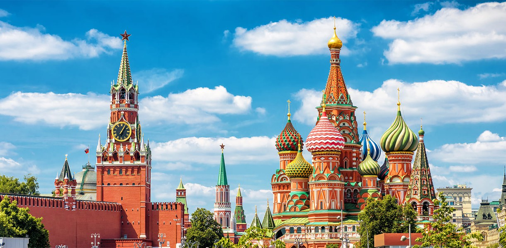

Города России

Впервые города возникли в Месопотамии и Египте около 6000 лет назад, затем в Китае, Индии и Юго-Восточной Азии 5000 лет назад. Другая волна урбанизации прошла 4000-2500 лет назад в Мезоамерике, Андах в Южной Америке и в Африке южней Сахары.
Го́род — крупный населённый пункт, жители которого заняты, как правило, не сельским хозяйством. Имеет развитый комплекс хозяйства и экономики. Является скоплением архитектурных и инженерных сооружений, обеспечивающих жизнедеятельность постоянного и временного населения города. Исторически термин происходит от наличия вокруг поселения оборонительной ограды — вала или стены. В Древней Руси городом называлось всякое крупное жилое место, окружённое такой оградой. Города служили центром развития искусства и ремёсел, технических достижений.